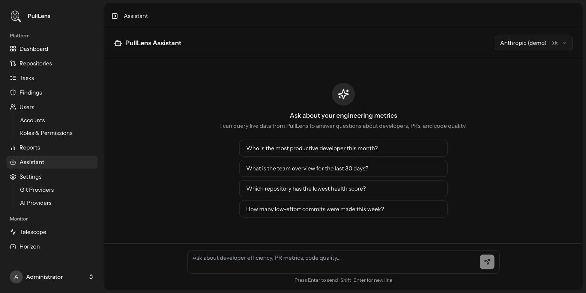

Using PullLens
AI assistant
Ask questions about your own engineering data in plain language.

What it can do
The assistant queries the data PullLens has already collected and answers in plain language - useful when you know the question but not which report holds the answer.
- “Who is the most productive developer this month?”
- “What is the team overview for the last 30 days?”
- “Which repository has the lowest health score?”
- “How many low-effort commits were made this week?”
What it will not do
It is deliberately scoped to PullLens data. It will not answer general programming questions, write code, or discuss anything outside your metrics - instructions inside a conversation cannot widen that scope.
How it works
| Aspect | Detail |
|---|---|
| Provider | Uses your default AI provider; pick another from the selector. Each message costs a call - see AI Usage. |
| History | Kept server-side per user for seven days, capped at 50 turns. The browser's copy is for display only and is never used as model input - otherwise a crafted request could put words in the assistant's mouth. |
| Privacy | Your conversation is yours; nobody else's account can read it. Clear history deletes it. |
| Rate limit | 20 messages per minute per user, because every message spends provider credit. |